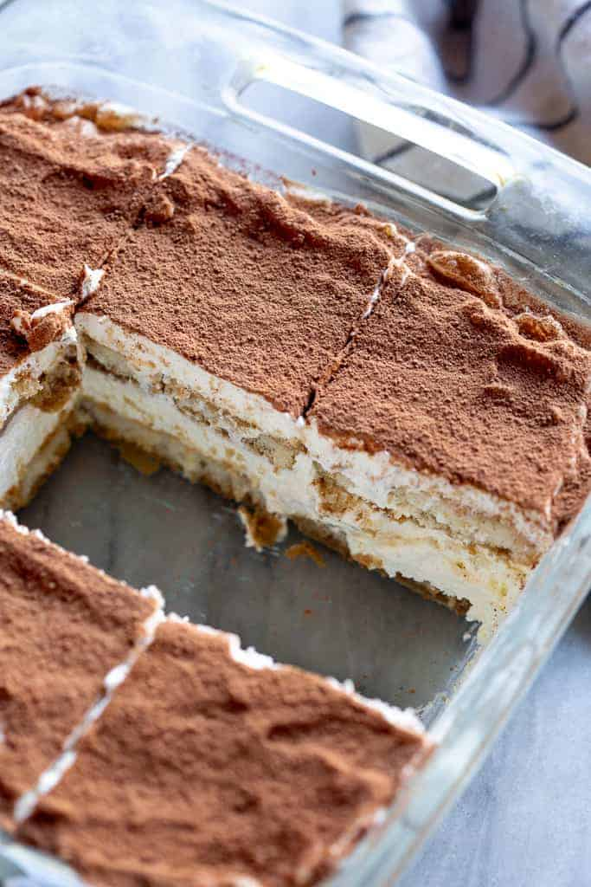

This delicious and unbelievably easy Tiramisu recipe is made with coffee soaked lady fingers, sweet and creamy mascarpone (no raw eggs!), and cocoa powder dusted on top. It requires no baking and can be made in advance!
Who doesn’t love an easy no-bake dessert? That’s one of the best things about this tiramisu recipe. If you are looking quick no-bake dessert I also love No Bake Peanut Butter Pretzel Bars and Butterscotch Cereal Bars.

This recipe has been a long time coming, and I’m embarrassed to admit how much tiramisu has been made in the trial of this recipe (I literally bought out every package of Savoiardi lady fingers at two different stores!) but I wanted to nail down the right approach.
By “right approach”, I mean how traditional of a tiramisu recipe I wanted to share. (In case you’re not familiar with it, Tiramisu is a popular Italian dessert made with lady fingers (or spongecake), coffee, liqueur, and mascarpone cheese topped with chocolate powder). Should I make the lady fingers from scratch? Does it matter? And more importantly, do I make it with raw eggs?
My tiramisu does not use raw eggs. It’s the easiest tiramisu recipe to make, and there’s no sacrifice in flavor.
Traditional tiramisu uses raw egg yolks and sugar beaten and then combined with raw whipped egg whites and mascarpone. I’ve tried that method, but thought people would most likely be turned off by the raw eggs.
Then I tried using a double boiler to gently cook the eggs and sugar before adding them to the mascarpone, which is a really common method used in lots of modern recipes (the Pioneer Woman has a great recipe!). I found it tricky to get the thick and creamy mascarpone layer I wanted.
So, I ultimately decided to swap out the egg whites in favor of fresh whipped cream, because I like the flavor and texture more. The result is delicious and EASY! You’re going to love it!
Tiramisu can be made with or without alcohol. This recipe calls for coffee flavored liqueur because I like that it enhances the coffee flavor.
Tiramisu is even better when made in advance, allowing the flavors to blend! It will keep in the refrigerator for 2 to 3 days.
To freeze, make completely, but don’t dust with cocoa powder. Cover tightly with plastic wrap and then tinfoil and freeze for up to 3 months. Thaw in the refrigerator overnight and dust with cocoa powder a few hours before serving.

Alcohol: Tiramisu can be made with or without alcohol. This recipe calls for coffee flavored liqueur because I like that it enhances the coffee flavor, but other options are marsala wine or brandy.
Make Ahead Instructions: Tiramisu is even better when made in advance, allowing the flavors to blend! It will keep in the refrigerator for 2 to 3 days.
Freezing Instructions: Make completely, but don't dust with cocoa powder. Cover tightly with plastic wrap and then tinfoil and freeze for up to 3 months. Thaw in the refrigerator overnight and dust with cocoa powder a few hours before serving.